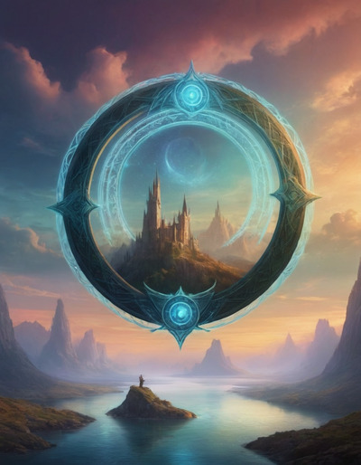

Introduction¶
Welcome to Gnosis, a narrative game of collaborative world creation and epic stories. In Gnosis, the GM, as well as all other players, work together to craft stories for the enjoyment of the whole table.
Telling Stories Together¶
The purpose of playing the game, is to collaboratively tell a story that engages everyone. This means everyone at the table, not just the GM, is responsible for making that story emerge.
As one of those players, consider two things when choosing action, narration and outcomes:
What would the character do? Not necessarily what is optimal, but what would that particular character with all their flaws and baggage do?
What would make a better story? What would make the story being told cooler, more exciting, funnier. Why aren’t you choosing to make the story better?
Session Zero¶
Session Zero is the idea that the group will meet before initializing the shared imagery space and discuss the parameters of the game to come. This is traditionally where the social contract between all the players is discussed and ensures everyone has similar expectations.
This is the point to discuss limits, things that players don’t want to see in the game, and veils, things that if they appear will be quickly glossed over rather than graphically dwelt on. For many groups these topics end up being such things as racial violence, violence against children, sexual assault, etc.
In Gnosis, it is also when the group will work cooperatively to build the world and the Heroes. World creation and Hero creation should be a group activity done in the context of session zero with understanding of the groups expectations.
Creation¶
{kind=link}
Gnosis is a game that leans toward an epic and heroic tone, but it works with any setting. That setting is called Creation and in the central framing of the game, Creation is created by Demiurges to impress the Story, a all encompassing perfect spiritual entity that created the Demiurges.
This setting is defined by all the players, not just the GM, and evolves and grows over time.
Demiurge¶
In Gnosis the players play both a Demiurge and a Hero.
For whatever reason Demiurges are driven to create interesting situations and urge Heroes into them. If that makes them sound like role playing game players, you’re not wrong.
Demiurges don’t get spotlight time or personalties, they are the impersonal conceit used to create the setting and quests to lure the Heroes into action. Logos is the currency the Demiurges spend to create Facts and Quests.
If the group needs to explain some bit of table talk and coordination that the Heroes couldn’t do, Demiurges allow that to happen. Demiurges are as inexplicable to Creation and the Heroes as the players are.
Logos¶
Logos is the Currency spent by the Demiurge to alter Creation and create Quests for their Heroes. Demiurges recover a Logos at the beginning of each session, completions of Quests and after Facts appear in the Story a few times.
Hero¶
The Hero may be more or less heroic, depending on the setting that is chosen and the game the players want to play, but Heroes are the protagonists of the story being told. These are the characters controlled by the players, and can be as varied as the settings they are played in.
Each Hero is defined by a High Concept and a Trouble.
Attributes¶
Each Hero has three attributes:
Power: A measure of raw power, physical, magical, political, persuasive or anything else.
Precision: A measure of finesse and accuracy. Precision is about using small amounts of power very effectively.
Possibility: A measure of a character’s ability spot, create and exploit opportunities.
Heroes get a d12, d10 and d8 to assign, one to each attribute.
Attribute Roll¶
The basic dice roll to accomplish anything is to roll the Heroes Power, Precisions and Possibility and add up the total. That number is compared to an opposed roll, or sometimes as set number. This is called an Attribute Roll.
As the Hero gets better, by acquiring Boons, each attribute will get up to three tiers of advantage.
Boons¶
Boons are a broad set of things that are part of a Hero. They are the building blocks that build a Hero. Talents, Gear, Kith and Locations are the main categories of Boons.
Boons are narrative and unique. There is an infinite set of Boons, the only limit is a player’s imagination and the credibility of the table.
Edges¶
Edges are how a Hero bends the rules. Not of Creation, a Hero doesn’t need an Edge to cast a spell as long as Creation has magic, and they are some sort of magic user. Edges bend the rules of fortune and bend the game mechanics in the Hero’s favor in certain circumstances.
Edges allow Heroes to do things to shift fortune in their favor. Each Hero has their own Edges. A Hero must spend Favor to activate their Edges.
Paths¶
A Hero’s Paths are mix of their motivations, obsessions and natures. They may be related to a character’s Trouble, or may be separate, but like a character’s Trouble they motivate a Hero to action.
When a Hero’s Paths come up in play the Hero gains Favor.
Favor¶
Favor is the currency that players spend to make their Heroes do more than they usually can. Favor is flexible and can be used for a lot of effects, everything from powering Edges to re-rolling dice and other effects.
A Hero’s starts each session with eight Favor, and there are various things that allow a Hero to recover one or more Favor during the Session.